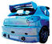

De: La Frikipedia, la enciclopedia extremadamente seria.
De: La Frikipedia, la enciclopedia extremadamente seria. De: La Frikipedia, la enciclopedia extremadamente seria.
|  | SPOILERS. |
| De la serie Saint Seiya: | |||
| Tenma de Pegaso | |||
| |||
| nacimiento | es mayor que seiya | ||
| muerte | ase muchos años atras | ||
| ocupación | cojerse a atenea | ||
| nacionalidad | yo que se | ||
| malo_bueno | es bueno pero en realidad es malo | ||
| atentados | quitarle el ojo a su mejor amigo | ||
| religion | ateneasco | ||
| notas | se dise que es una funcion de naruto y seiya | ||
es el prota... de Lost canvas. Es el Santo de bronce de payaso pegaso. Además se caracteriza por ser el naruto de Saint Seiya ya que esta enamorado de su mejor amigo alone que es la recarnacion de Hades porque era la persona mas estupida del planeta superando a Yamcha
tenma es un tio parecido a Seiya es decir muy feo, con una boca enorme, chaparro y llenito de músculos pero se diferencia de los demás en que es el protagonista de Lost canvas, al principio se bestia con un niño limpia sapatos pero despues va mejorando su forma de bestir asta tener una armadura con falda muy parecida a la primera armadura de Seiya pero mas femenina.
todo comenso cuando atenea la hermana de alone se fue de la aldea dejando a su hermano en cuidado a tenma y gracias a eso tenma pudo aprobechar eso para hacer todo lo que el queria a alone como en las noches lluviosas dormir con el y hacerle cosas malas, muy malas.
al principio salio como el chico rudo defendiendo a un gay de dos violadores pero despues no es mas que una niña que lo salva dohko despues de que este destruyera una piedrita luego dohko lo llevo al santuario para que aprendiera a cosinar pero en lugar de eso tenma se rovo una armadura y por eso se combirtio en caballero.
actualmente anda de gilipollas con una amazona y con yato luchando como gil y dando madrizas en el capitulo final muere como el gilipollas que es, pero no como seiya este muere un poco mas orgullosamente feo y con mal final.
hay 10 cosas que no sabias y si sabias de tenma hay muchas cosas que sabes de tenma de pegaso ya que hay muchos que leen el hentai manga pero tambien hay muchos secretis que no sabes pero gracias a nosotros sabras que hacen y todo es asolutamente falso verdad
| |
Afrodita • Aiakos • Aioria • Aioros • Aldebarán • Apolo • Caballeros dorados • Camus • Death Mask • Dohko • Exclamación de Atena • Generales Marinos • Hades • Hyōga • Hyperión • Hypnos • Ikki • Kagaho • Kanon • Milo • Minos • Mu • Poseidon • Radamanthys • Saga • Saint Seiya: The Lost Canvas - Hades Mythology • Saori • Seiya • Shaka • Shion • Shiryū • Shun • Shura • Síndrome de Saint Seiya • Tenma • Thanatos • Trío Dark |
Autor(es):